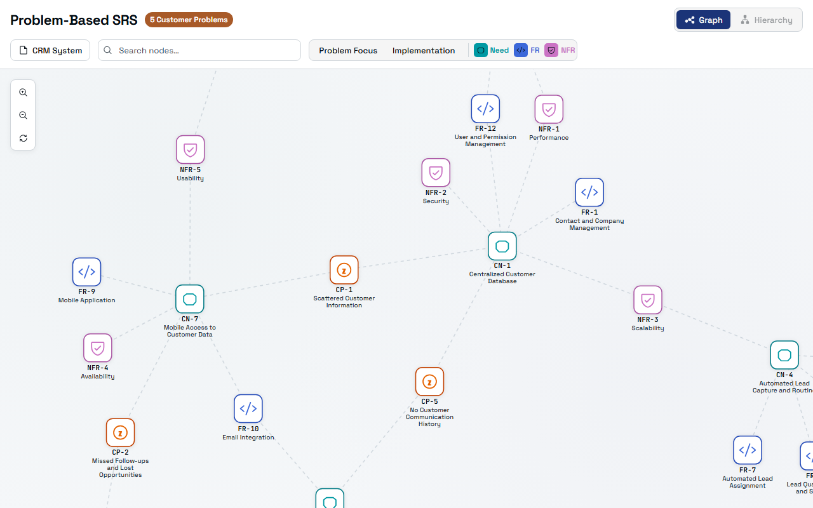
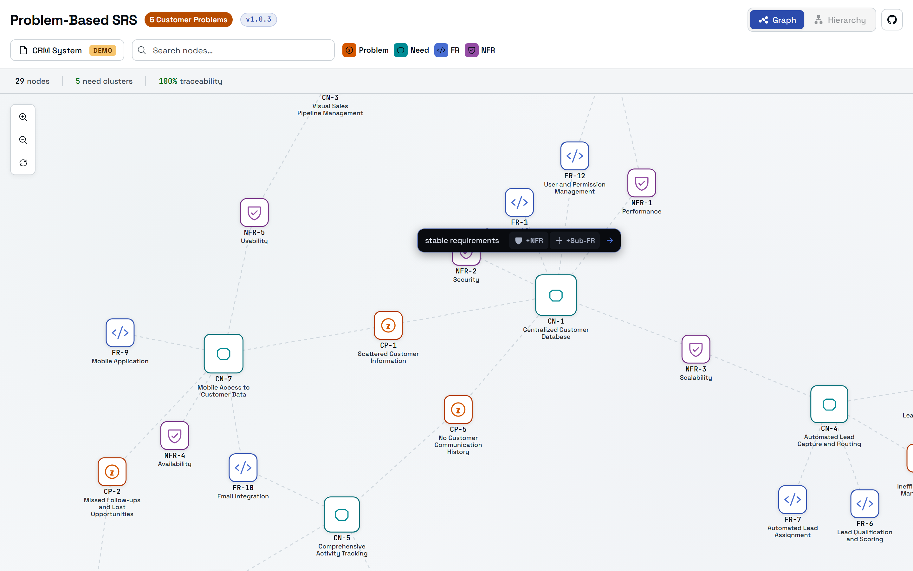
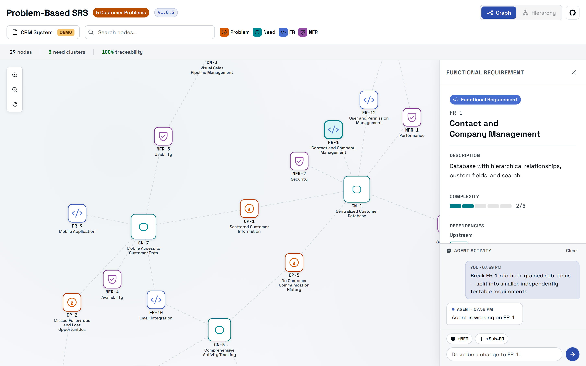

See every artifact and its links
The navigator reads your .spec/ folder and draws each artifact as a node in a force-directed graph. Traceability links are dashed; drag to rearrange, scroll to zoom, and search any node by name.
Every node is color-coded by type:
- CP Customer Problem
- CN Customer Need
- FR Functional Requirement
- NFR Non-Functional Requirement

Derive or decompose, inline
Hover any node to reveal a floating action bar. Type an instruction, then pick an action: derive the next artifact downstream, or decompose the node into finer-grained, independently testable sub-items. Each action runs the methodology skill that owns that step.
- Problem +CN+Sub-CP
- Need +FR+Sub-CN
- FR +NFR+Sub-FR
- NFR +Sub-NFR

Refine the spec with the agent
Triggering an action opens the node's detail panel (description, a complexity score, and its upstream and downstream traceability) next to a live Agent activity log. Your request runs through the skill, the spec files are edited, and the graph refreshes on its own.

Spot the gaps in your traceability
A health bar runs across the top of the graph. Each metric is a filter: click one to isolate the nodes that need attention, so a problem with no need or a need with no requirement never slips through.
Pair the metrics with search to jump to any node, and the hierarchy view to read the same spec as a nested outline.
Launch it with /live
The navigator ships inside the Problem-Based SRS plugin. Once installed, open it from any session:
/liveCopilot opens the canvas in the side panel and loads the specification from your project's .spec/ folder. No spec yet? Run the methodology first (/problem-based-srs), then open the navigator to see it take shape.